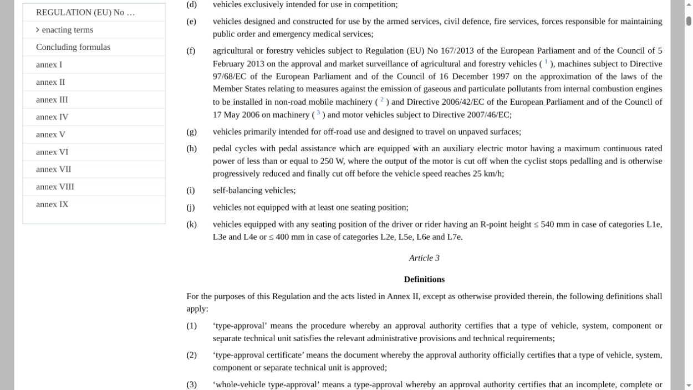

Entering the EU e-bike market: four compliance gates for e-bike traders
Using EU legal texts current to November 2026, this guide maps the 250W/25km/h classification boundary, the 2027 machinery-law transition, LMT battery passports and online product information into an actionable checklist for e-bike traders.
The core idea: compliance is an evidence chain, not one certificate
For an e-bike entering the EU, vehicle classification, machinery safety, battery rules, online information and the responsibilities of EU economic operators form one connected chain. A single test report does not prove that a specific SKU, its current configuration, instructions, labels and sales page remain aligned.
This is business research verified on November 19, 2026, not legal advice. Implementing acts, harmonised-standard lists and Member State enforcement can continue to change; the EU importer, responsible operator and a properly scoped laboratory should review every SKU before market launch.
Gate 1: lock the 250W/25km/h vehicle-classification boundary
Article 2(2)(h) of Regulation 168/2013 excludes a defined pedal-assist cycle from that Regulation's motor-vehicle type-approval scope: maximum continuous rated power no greater than 250W, motor output stopping when the cyclist stops pedalling, and assistance progressively reducing and cutting off before 25km/h. The control behaviour and continuous rating matter—not merely the marketing name shown on a product page.
Meeting this exclusion does not complete EU compliance. It only answers the scope question under Regulation 168/2013; machinery safety, other applicable product rules, labels, technical documentation and destination-country rules still need to be addressed. Models outside the boundary may fall into an L-category vehicle route and should not share one declaration with a standard EPAC.

Gate 2: prepare a two-timeline plan for the 2027 machinery transition
The European Commission states that machinery placed on the EU market before January 20, 2027 must comply with Directive 2006/42/EC, while Regulation (EU) 2023/1230 becomes mandatory from January 20, 2027. For models developed in late 2026 but shipped after the transition, e-bike traders should agree with the importer on the actual placing-on-the-market date rather than relying only on the order date.
Harmonised standards are a voluntary route for demonstrating conformity with essential requirements, and their references must be published in the Official Journal. In practice, each SKU needs a legislation–risk–test–evidence matrix, with a laboratory confirming the current standard editions and transition plan instead of reusing an old certificate for a changed configuration.
Gate 3: manage the battery as a separate data product
The EU Batteries Regulation classifies e-bike and e-scooter batteries as light means of transport (LMT) batteries. The Commission's overview spans sustainability, safety, labelling, supply-chain due diligence and end-of-life management—not only transport testing.
Article 77 requires each LMT battery placed on the market or put into service from February 18, 2027 to have an electronic battery passport linked to a unique identifier. E-bike traders should move preparation upstream: define fields for battery model, chemistry, capacity, manufacturing plant, declarations, state-of-health and lifetime parameters, repair and dismantling information, and accountable owners; then decide who creates, updates and retains the passport and QR-linked data.
Waiting for a customer to request a QR code is too late. Supplier agreements should cover required data, change notification, batch traceability and ongoing updates, with changes to cells, BMS or enclosure triggering reassessment.

Gate 4: make product pages part of the compliance evidence chain
Article 19 of the General Product Safety Regulation requires online or distance-sales offers aimed at EU consumers to clearly show the manufacturer's name and postal and electronic address; where the manufacturer is outside the EU, the EU responsible person's name and contact details; product identification including an image and type or other identifier; and applicable warnings and safety information.
B2B e-bike websites should first determine whether each page is an enquiry showcase or an offer targeted at EU consumers. Even for distributor-only pages, a reusable dealer compliance pack can help customers publish the correct model, manufacturer, EU responsible person, warnings, instruction revision and images instead of retyping inconsistent data.
For e-bike traders: a one-week action checklist
First, create a classification sheet for every model: continuous rated power, maximum assisted speed, output behaviour when pedalling stops, throttle or walk-assist functions, target country and intended placing-on-the-market date. Escalate any model outside the standard EPAC boundary for a separate review.
Second, build a versioned evidence pack per SKU: BOM and critical-component revisions, risk assessment, test reports, declaration of conformity, labels, instructions, product photographs, serial-number rules and change history. Sales quotations should reference a defined SKU and evidence-pack revision.
Third, send battery suppliers a 2027 data questionnaire covering passport fields, unique identifiers, data ownership, update interfaces, removability and replacement design, batch traceability and change notification. Treat missing data as a supply-chain gap rather than a copywriting problem.
Fourth, sample-check company product pages and dealer media packs for unique model identification, alignment with the tested sample, confusion between the 250W continuous rating and controller or peak-power claims, and traceable warning and instruction revisions. Track gap-closure rate, on-time supplier data and reassessment lead time after configuration changes each month.